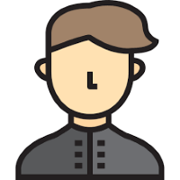

Né le 25/01/07
N INE : 2590000 U
Adresse : 1,impasse de l'espoir 01234 Lambdapi
Telephone : 01.23.45.67.89
Mail
Etudes :
- 2099 : Baccalauréat section jonglistique obtenu avec mention Pas Mal
- 99-01 : Math Sup puis Spé au lycée Mickael kael deGroland
- 2101 : Obtention du deug "Clavier et souris " a l'universite de la pomme
- 2102 : Obtention de la licence "Des yeux vers l 'ecran et inversement " avec mention Bien Vu
- 2104 : Obtention de la maitrise "l'infi c 'est facile' " avec Mention Respect et grosses bises du Jury
Expériences professionnelles :
2106 : Stage de recherche dans l'équipe Logical du LIX sous la direction de
Gilles Dowek(Rapport)
Language de programmation maitrises
Caml,Coq,Prolog,Java,C,C++,XHTML,PHP,CSS,MySQL.